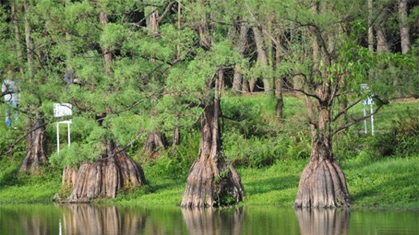

1. Đặc điểm hình thái
Cây gỗ vừa đến lớn, cao 10-20m, D1.3 từ 14 đến 70cm. Vỏ màu xám, bóc tách thành từng mảng nhỏ. Lá hình dải mác, xếp xoắn ốc thành 2 dãy, mọc cách, dài khoảng 1,5-2,2cm, rộng khoảng 3mm. Đầu lá nhọn, mép nguyên, mặt trên xanh vàng, mặt dưới hơi nhạt (không rõ 2 băng trắng mặt dưới). Lá cành chính có thể vươn lên hơn và xếp dàn trải.
Nón cái đơn độc, một hạt, áo hạt màu đỏ, chín trong một năm. Nón đực xếp thành hàng ở nách lá trên cành năm trước, nhỏ, hình trứng, dài 6mm, rộng 3mm. Hạt hình trứng, khi chín màu đen.

2. Phân bố
Sơn La (Yên Châu: Mường Lựm), Lào Cai (Văn Bàn), Hà Giang (Đồng Văn, Quản Bạ), Cao Bằng (Bảo Lạc, Trà Lĩnh), Hoà Bình (Mai Châu: Pà Cò; Đà Bắc), Thanh Hoá (Bá Thước: Cổ Lũng).